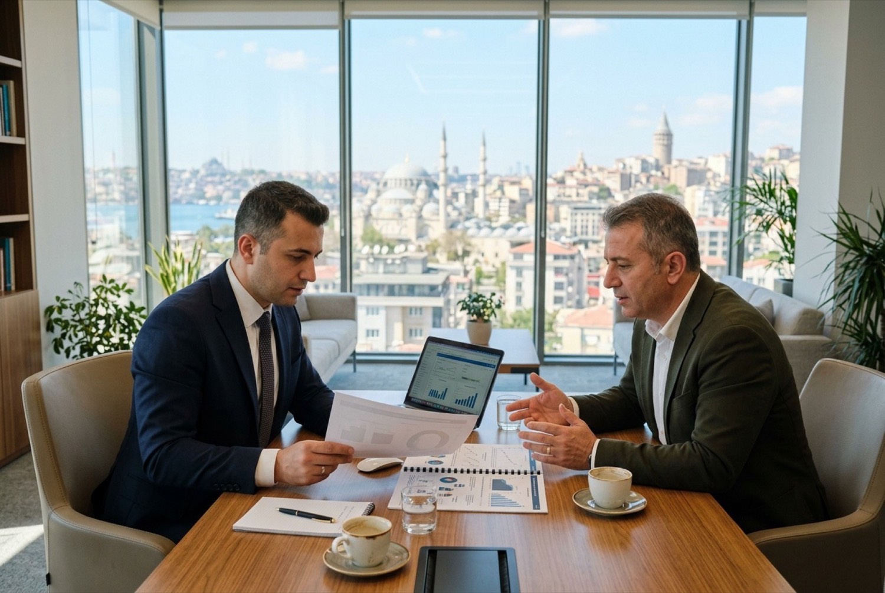

Ana sayfa / Bölge müdürlükleri
Bölge müdürlükleri
Genel müdürlük İstanbul Esenyurt'ta; sahada 8 bölge müdürlüğü. Keşif, görevli yerleştirme ve saha denetimi tesisinizin bağlı olduğu bölgenin ekibiyle yapılır.
Harita
Noktaya ya da aşağıdaki listeden bir bölgeye dokunun. Kare işaret genel müdürlüğü gösterir.
İl ve bölge listesi
Tesisinizin ilini bulun. Tüm bölgelere 0850 888 73 77 genel hattından ulaşılır; çağrı ilgili bölgeye aktarılır.
| Bölge | Merkez | Sorumlu iller |
|---|---|---|
| Genel Müdürlük | İstanbul, Esenyurt | İstanbul, Tekirdağ, Edirne, Kırklareli |
| Marmara | Kocaeli | Kocaeli, Sakarya, Bursa, Yalova, Bilecik, Düzce, Bolu, Balıkesir, Çanakkale |
| İç Anadolu | Ankara | Ankara, Konya, Eskişehir, Kayseri, Kırıkkale, Kırşehir, Aksaray, Nevşehir, Niğde, Karaman, Yozgat, Sivas, Çankırı |
| Karadeniz | Ordu | Ordu, Samsun, Giresun, Trabzon, Rize, Artvin, Gümüşhane, Bayburt, Tokat, Amasya, Çorum, Sinop, Kastamonu, Karabük, Bartın, Zonguldak |
| Ege | İzmir | İzmir, Manisa, Aydın, Muğla, Denizli, Uşak, Afyonkarahisar, Kütahya |
| Akdeniz | Adana | Adana, Mersin, Hatay, Osmaniye, Kahramanmaraş |
| Antalya | Antalya | Antalya, Isparta, Burdur |
| Güneydoğu Anadolu | Gaziantep | Gaziantep, Şanlıurfa, Adıyaman, Kilis, Diyarbakır, Mardin, Batman, Siirt, Şırnak, Malatya |
| Doğu Anadolu | Ağrı, Doğubayazıt | Ağrı, Erzurum, Kars, Iğdır, Ardahan, Van, Muş, Bitlis, Hakkari, Erzincan, Elazığ, Tunceli, Bingöl |

Birden fazla ilde tesisiniz varsa
- Tek sözleşme ve tek hizmet seviyesi; her tesis için ayrı ek protokol
- Her tesisin keşif ve denetimi bağlı olduğu bölge müdürlüğünce yapılır
- Tüm tesisler müşteri portalında tek hesapta, tesis bazında süzülerek izlenir
- Aylık rapor ve fatura genel müdürlükten tek kalemde